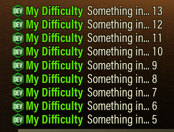

Mutators 动态参数与逻辑控制
Here follows an alphabetized list of mutators for CD2.
下面是CD2中按字母先后顺序排序的Mutators列表【注： 示例代码中的中文 对于格式是有问题的，仅用作参考】
Accumulate（累加）
Accumulate can track changes in other mutators by adding to a starting Initial number. In addition, it also supports clamping the accumulated value with Min and Max. If used with a constant value, it can be used to make a simple counter.
Accumulate可以从 Initial 指定的初始值上开始累加，以跟踪其它 Mutators 的变化。此外，还可通过使用"Min"和"Max"对累计值进行范围限定。若与常数值配合使用，即可实现一个简单的计数器
Example: the value of the following snippet starts at 0 and would cap at 10 after roughly 10 seconds.
示例：下面这段代码的数值会从 0 开始计数，在大约 10 秒后达到上限10。
{
"Mutate": "Accumulate",
"Initial": 0,
"Value": 1,
"Min": 0,
"Max": 10
}
Add, Subtract, Multiply, Divide, Pow, Modulo, Round, Ceil, Floor（加、减、乘、除、幂、取模、四舍五入、向上取整、向下取整）
Arithmetic mutators that can be used for basic mathematical operations.
这些是可以用于基本数学运算的mutators
Example: enemy speed as a linear function of resupplies called during the mission.
示例:根据任务中呼叫补给的次数线性增加敌人速度
"SpeedModifier": {
"Mutate": "Add",
"A": 1.35,
"B": {
"Mutate": "Multiply",
"A": {
"Mutate": "ResuppliesCalled"
},
"B": 0.1
}
}
即 y(速度)=1.35+0.1*x(呼叫补给次数)
And, Or, Not（与、或、非）
Basic boolean operators.
基础布伦逻辑
ByBiome（根据生物群系）
Change the value based on the mission biome. If a value isn't set for a biome it will use the 'Default' value. A 'Default' must be set unless a value is specified for biomes. If a biome is not recognized and no default is specified, the value for CrystallineCaverns will be used.
根据任务所在群系来改变数值，如果某个群系没有设置对应参数，则使用Default值。除非所有的群系都设置了对应值，否则必须设置Default值。如果某群系没有识别到对应值且无Default值，则使用"CrystallineCaverns"的值
| Official name | Alias 1 | Alias 2 |
|---|---|---|
| BIOME_AzureWeald蔚蓝花甸 | AzureWeald | |
| BIOME_CrystalCaves水晶洞穴 | CrystalCaves | CrystallineCaverns |
| BIOME_DenseBiozone密林丛原 | DenseBiozone | Biozone |
| BIOME_FungusBogs霉菌沼泽 | FungusBogs | |
| BIOME_HollowBough藤络树洞 | HollowBough | |
| BIOME_IceCaves冰封岩层 | IceCaves | GlacialStrata |
| BIOME_MagmaCaves熔岩之心 | MagmaCaves | MagmaCore |
| BIOME_RadioactiveZone放射性禁区 | RadioactiveExclusionZone | REZ |
| BIOME_SaltCaves盐坑 | SaltCaves | SaltPits |
| BIOME_SandblastedCorridors飞沙走廊 | SandblastedCorridors | Sandblasted |
ByDDStage（根据深潜阶段）
Change the value based on the Deep Dive stage. If a value isn't set for a stage, it will use the 'Default' value. A 'Default' must be set.
根据深潜阶段来改变数值，如果某个阶段的对应值没设定则使用Default值，必须设定Default值
Example:
示例:
{
"Mutate": "ByDDStage",
"Default": 1.2,
"Stage1": 1.0,
"Stage2": 1.2,
"Stage3": 1.45
}
ByDNA
Allows setting a value based on a combination of Mission Type, Length, and Complexity:
允许cd2根据任务类型、长度、复杂度来设定数值。
{
"Mutate": "ByDNA",
"Default": 1,
"Mining": 2,
"Refinery": 3,
"Refinery,x,2": 5, “炼油、x长度、2复杂度”
"Refinery,2": 4,
"x,x,2": 8
}
The condition with the most matches will be prioritized. Mission type is prioritized over length and length over complexity. An “x” matches anything. In the above a (2,2) refinery would have the value 4.
匹配的最多的条件会被优先采用，任务类型的匹配优先级高于任务长度，而长度的匹配优先级又高于复杂度。“x”指代任意值。在上述例子中，如果为炼油任务，长度2，复杂度2，则采用数值4
ByEscortPhase（根据护送任务阶段）
Used to detect the different stages of an Escort mission:
用于检测护送任务的不同阶段
{
"Mutate": "ByEscortPhase",
"Default": 0,
"InGarage": 0.1, “未拆封”
"Stationary": 2, “拆封后未发车”
"Moving": 30, “移动中”
"WaitingForFuel": 400, “加油”
"FinalEventA": 5, “心石阶段一”
"FinalEventB": 0.6, “心石阶段二”
"FinalEventC": 70, “心石阶段三”
"FinalEventD": 8, “心石阶段四”
"Finished": 900 “完成”
}
ByMissionType（根据任务类型）
Change the value based on mission type. If a value isn't set for a mission type it will use the 'Default' value. A 'Default' must be set unless a value is specified for all mission types. Supported mission types:
根据任务类型改变数值，如果某个任务类型未设置对应数值，则采用Default值。除非所有任务类型都设置对应数值，否则必须设置Default值
- DeepScan 深层扫描
- Egg 虫蛋收集
- Elimination 消灭任务
- Escort 执勤护送
- Mining 采矿探险
- PE 定点提取
- Refinery 就地精炼
- Sabotage 设施破坏
- Salvage 搜救行动
Example:
示例:
{
"Mutate": "ByMissionType",
"Default": 60,
"Egg": 70,
"PE": 80
}
BySecondary（根据次要目标）
Can be used to detect secondary objectives both on normal missions and on deep dives. The objectives have the following names:
可以用于检测普通任务/深潜任务中的次要物品。物品名称如下
| Name |
|---|
| OBJ_2nd_Mine_Dystrum 异镝 |
| OBJ_2nd_Mine_Hollomite 容和石 |
| OBJ_2nd_KillFleas 消灭脓虱 |
| OBJ_2nd_Find_Gunkseed 收集粘液种子 |
| OBJ_2nd_Find_Fossil 收集化石 |
| OBJ_2nd_Find_Ebonut 收集硬胶果实 |
| OBJ_2nd_Find_BooloCap 收集布洛蘑菇 |
| OBJ_2nd_Find_ApocaBloom 收集彼岸花 |
| OBJ_2nd_DestroyEggs 消灭异虫蛋 |
| OBJ_2nd_DestroyBhaBarnacles 消灭巴氏藤壶 |
| OBJ_DD_RepairMinimules 修好迷你矿骡 |
| OBJ_DD_Defense 回收黑匣子 |
| OBJ_DD_DeepScan 扫描共振水晶 |
| OBJ_DD_Morkite 收集墨棱石 |
| OBJ_DD_Elimination_Eggs 击杀无畏异虫 |
| OBJ_DD_AlienEggs 收集外星虫蛋 |
| OBJ_DD_MorkiteWell 精炼墨棱油 |
Example: change the Nitra multiplier depending on the secondary objective in deep dives (20 % more nitra on dreadnought and black box objectives).
示例：根据完成的次要目标，改变硝石倍率（完成消灭无畏/回收黑匣子后提供20%硝石增幅）
{
"NitraMultiplier": {
"Mutate": "BySecondary",
"OBJ_DD_Elimination_Eggs": 1.2,
"OBJ_DD_Defense": 1.2
}
}
ByTime（根据时间）
Change a value over time. Time matches the mission clock in the escape menu in-game, including starting before players receive control of their dwarves.
The value is determined by InitialValue + RateOfChange * Max(0, Time - StartDelay).
根据时间推移改变数值。时间与游戏内Esc菜单内的任务计时一致，包括玩家获得矮人控制权之前的时间。数值由以下公式 计算: InitialValue + RateOfChange * Max(0, Time - StartDelay)
Parameters:
InitialValue- Value at time 0 and up until StartDelay 在时间为0以及正式开始计时前所使用的值StartDelay- Time in seconds to stay at the InitialValue before changing. 在开始变化前停留在初始值的时间RateOfChange- Rate per second to change the value. 数值每秒的变化量
Example:
示例：
{
"Mutate": "ByTime",
"InitialValue": 3.1,
"RateOfChange": 0.0033,
"StartDelay": 400
}
ByPlayerCount（根据玩家数量）
Change the value based on the number of players in-game. A solo game gets the first position in the list; two players get the second spot and so on. The last value in the list is used if there are more players than there are values in the list.
根据游戏中玩家的数量来改变值。单人游戏使用列表中的第一个值，两个玩家则使用第二个值，以此类推。如果玩家数量超出列表定义值数量，则使用最后那个数值
Example:
示例：
{
"Mutate": "ByPlayerCount",
"Values": [
80,
120,
180,
180
]
}
ByRefineryPhase（根据炼油阶段）
Used to detect the different stages of a Refinery mission.
用于检测炼油任务不同阶段
{
"Mutate": "ByRefineryPhase",
"Default": 0,
"Landing": 1,
"ConnectingPipes": 2, 连接管道
"PipesConnected": 3, 管道连接完，启动炼油前
"Refining": 4, 正式炼油
"RefiningStalled": 5, 管道损坏
"RefiningComplete": 6, 管道修复
"RocketLaunched": 7
}
ByResuppliesCalled（根据呼叫补给次数）
Allows specifying an array with indexes 0, 1, 2, etc, where the values at each index become valid when the number of resupplies corresponding to said index have been called. The most typical use is specifying a varying number of resupply costs. For example:
你可以指定一个数组（例如 [0, 1, 2, …]），当呼叫补给的次数达到某个数值时，就使用数组中对应位置的值。最常见的用法是让每次呼叫补给所消耗的资源随着呼叫次数动态变化。例如：
{
"Resupply": {
"Cost": {
"Mutate": "ByResuppliesCalled",
"Values": [40, 50, 60]
}
}
}
will set up the first resupply to be 40 nitra, the second to be 50 nitra and 60 for all subsequent supplies.
这将使第一个补给消耗40硝石，第二个补给消耗50硝石，而第三个以及之后的补给都消耗60硝石
BySaboPhase（根据设施破坏阶段）
Used to detect the different stages of a Sabotage mission.
用于检测设施破坏任务的不同阶段。
{
"Mutate": "BySaboPhase",
"Default": "Default Value",
"Hacking": "Hacking Value", 骇入阶段
"BetweenHacks": "BetweenHacks Value",
"HackingFinished": "HackingFinished Value",
"Phase1Vent": "Phase1VentValue", 第一次黄盾
"Phase1Eye": "Value for Phase1Eye", 第一个开眼
"Phase2Vent": "Value for Phase2Vent", 第二次黄盾
"Phase2Eye": "Value for Phase2Eye", 第二次开眼
"Phase3Vent": "Phase3Vent Value", 第三次黄盾
"Phase3Eye": "Value to use during Phase3Eye", 第三次开眼
"Finished": "Value for Finished"
}
BySalvagePhase（根据搜救行动阶段）
Used to detect the different stages of a Salvage mission. The mutator uses the Default value for any mission that is not Salvage.
用于检测搜救行动的不同阶段。对于非搜救的任务，Mutator使用Default值
{
"Mutate": "BySalvagePhase",
"Default": "Default Value",
"Mules": "Value until all mules repaired",
"PreUplink": "Value while mules finished but uplink not started",
"Uplink": "Value during the uplink event",
"PreRefuel": "Value between defense events",
"Refuel": "Value during the refuel event",
"Finished": "Value for the remainder of the mission"
}
Clamp（限制）
Constrain a float (number) to fall within a range. This range is inclusive. If only a min or only a max is specified, the value will only be clamped in that direction.
将一个浮点数限制在一个范围内，这个范围包括边界值（min/max）。如果只指定最小值或最大值，则只在对应方向进行限制
Example:
示例：
{
"Mutate": "Clamp",
"Value": 90,
"Min": 0,
"Max": 100
}
Countdown（倒计时）
A mutator that will count down from Start to Stop. It is usually used together with the Int2String mutator and the messages module to print messages on chat. It also has a Default value which is used when the countdown is not enabled. A boolean, mutable Enable field starts the countdown:
这是一个从 Start 倒数到 Stop 的mutator，通常与Int2String 这个mutator一起使用，用于在聊天框("Message")输出倒计时信息。当倒计时未启用时，则使用Default值。通过一段可修改的布尔字段来启动倒计时
"Messages": [
{
"SendOnChange": true,
"Type": "Developer",
"Sender": "My Difficulty",
"Message": {
"Mutate": "Join",
"Values": [
"Something in...",
{
"Mutate": "Int2String",
"Value": {
"Mutate": "Countdown",
"Start": 16,
"Enable": true
}
}
]
}
}
]

If you want to trigger an event after a certain amount of time after something happens consider using the TriggerDelay and the trigger mutators instead of Countdown, at the bottom of the page.
如果你希望在某个事件发生后，经过一段延迟再触发另一个事件，建议使用页面底部的 TriggerDelay和 Trigger Mutators而不是 Countdown
DefenseProgress（守点进度）
This mutator tracks the progress of a defense event such as a black box, refuel or uplink. It returns a float between [0, 1] starting at 0.3.
这个Mutator用于追踪防守类事件（如回收黑匣子、上传和补充燃料）的进度，它会返回一个介于0~1之间的数值，初始值为0.3
Delta（变量）
Delta can be used to detect a change in some other variable or mutator, and it is often used with Accumulate.
Delta可以用于检测其他变量/Mutators的变化，通常与Accumulate一起使用。
Example:The following snippet will become momentarily true when a player receives health or shield damage.
示例：如下代码片段会在玩家受到生命值/护盾伤害时，短暂返回True
{
"Mutate": "IfFloat",
"Value": {
"Mutate": "Delta",
"Value": {
"Mutate": "Add",
"A": {
"Mutate": "DwarvesHealth"
},
"B": {
"Mutate": "DwarvesShield"
}
}
},
"<": 0,
"Then": true,
"Else": false
}
DepositedResource（存放资源）
Count of a resource that has been deposited into the team depository. Any resource can be referenced by the name as it appears in the in-game UI.
统计已经存放入矿骡的某种资源数量，可以使用游戏界面中显示的资源名称来引用任意资源。
Example:
示例：
{
"Mutate": "DepositedResource",
"Resource": "Nitra"
}
DescriptorExists（描述符是否可用）
This is a boolean value which reflects whether an enemy descriptor is available. This is intended to allow a difficulty to fall back to a different descriptor if the desired descriptor isn't available, e.g. if MEV is not available. Example:
这是一个布尔值，用于指示某个敌人的描述符是否可用。其作用是在目标描述符不可用时（如MEV模组不启用），允许系统回退到其它描述符。示例如下：
{
"Mutate": "If",
"Condition": {
"Mutate": "DescriptorExists",
"ED": "ED_MEV_Enemy"
},
"Then": ["ED_MEV_Enemy"],
"Else": ["ED_Backup"]
}
DrillerCount（钻机数量检测）
Number of drillers in the lobby.
检测大厅中的钻机数量
DuringDefend（守点期间）
Becomes true when a black box, uplink or cell refuel is active.
当防守类事件被激活时，变为True
DuringDread（对战无畏异虫期间）
Becomes true whenever there is one of the following descriptors active on the map: ED_Spider_Boss_Heavy (Hiveguard), ED_Spider_Boss_TwinA (Arbalest), ED_Spider_Boss_TwinB (Lacerator) and ED_Spider_Tank_Boss (classic Dreadnought).
当任务中存在任意无畏异虫时（包括直接替换的descripoter，不包括如"Ed_spider_tank_boss_weaken"），变为True
DuringDrillevator（钻井电梯期间）
Becomes true during the elevator phase in a Deep Scan mission.
当深层扫描任务处于Drillevator阶段时，变为true
DuringEggAmbush（蛋潮期间）
Returns True during a non-announced wave after pulling an egg in Egg Hunts. As an example of use, the following snippet increases the EnemyCountModifier only during Egg waves, to make them more challenging. The StartingAt and StoppingAfter tries to make the increase affect only the current egg wave.
在 虫蛋收集 任务中偷蛋后触发无宣告潮时，返回True。作为示例，下列代码片段仅在此类无宣告潮期间提高 EnemyCountMOdifier,以增加其挑战性。其中，StartingAt 和 StoppingAfter 的设置旨在确保使该增幅仅作用于当前这一波无宣告潮。
{
"DifficultySetting":
{
"EnemyCountModifier": {
"Mutate": "Multiply",
"A": {
"Mutate": "ByPlayerCount",
"Values": [
1.84,
2,
2.32,
2.8
]
},
"B": {
"Mutate": "If",
"Condition": {
"Mutate": "DuringEggAmbush",
"StartingAt": 5,
"StoppingAfter": 10
},
"Then": 4,
"Else": 1
}
}
}
}
DuringEncounters（遭遇潮期间）
Becomes true when Encounters are being placed in the map, that is, during mission generation. One of its uses it to change descriptor properties depending on whether they are part of an encounter or not:
任务生成阶段，当遭遇潮生成在地图中时，返回True。其作用之一是根据敌人是否属于遭遇潮，动态改变其Descriptor
{
"Enemies": {
"ED_Spider_Exploder": {
"Base": "ED_Spider_Exploder",
"CanBeUsedForConstantPressure": true,
"CanBeUsedInEncounters": true,
"DifficultyRating": 10,
"Rarity": {
"Mutate": "If",
"Condition": {
"Mutate": "DuringEncounters"
},
"Then": 0.1,
"Else": 5.5
}
}
}
}
The snippet will force exploders in almost all encounters by giving them a very low rarity during those.Clearing the EnemyPool when DuringEncounters is true will remove encounters from the mission.
该代码片段通过将大自爆的稀有度设为一个极低值，使其在几乎所有遭遇潮中都会生成。当 DuringEncounters 为 true 的时候清空 Enemypool 会移除任务中的所有遭遇战
DuringExtraction（撤离期间）
Becomes true during the extraction phase of the mission, ie, when going back to the drop pod.
当处于撤离阶段时，变为True
DuringGenericSwarm（宣告潮期间）
Becomes true during a swarm announced by Mission Control.
当处于宣告潮时，变为True
DuringMission（任务期间）
This is true during a mission, or true during a specific window of time during a mission if times are specified. If specified, StartingAt determines the elapsed mission time in seconds when this becomes true. If specified, StoppingAfter determines the elapsed mission time in seconds after which this is false.
在任务期间为true，或者在指定时间参数后的一个特定的时间窗口为true。若指定了 StartingAt ，则表示从任务开始经过多少秒变为true；同理，若指定了 StoppingAfter，则表示从任务开始经过多少秒后变为 false
Example:Only add stalkers and elite guards to the pool after 240 seconds have elapsed in the mission.
示例：仅在任务进行 240s后，才将潜行异虫和精英护卫加入怪池
"EnemyPool"{
"add" {
"Mutate": "If",
"Condition": {"Mutate": "DuringMission", "StartingAt": 240},
"Then": ["ED_Spider_Stalker", "ED_Spider_Grunt_Guard_Elite"],
"Else": []
}
}
DuringPECountdown（定点提取撤离期间）
Returns True during the extraction phase of a PE mission.
在定点提取撤离阶段，返回True
DwarfCount（矮人数量）
Returns the number of players in the mission.
返回当前任务中矮人的数量
DwarvesAmmo（团队弹药量比例）
Average percent ammo left for the team, 1 when all teammates have 100% of their ammo and 0 when all teammates are at 0% ammo. This works the same way as the 4 bars under the dwarves names in the UI.
返回团队剩余弹药的平均百分比，全员弹药满载时为1，全部耗尽为0。其计算方式与界面中矮人名字下方的四条弹药条一致（按Ctrl显示）
DwarvesDown（倒地矮人数量）
Float count of the dwarves that are currently down, 0 if no dwarves are currently downed, 4 if all 4 dwarves are down.
返回当前倒地矮人的数量，无人倒地为 0，四人全部倒地为 4。以下示例为三倒时，削弱虫子移速
"SpeedModifier"{
"Mutate":"IfFloat",
"Value":{
"Mutate":"DwarvesDown"
},
">=":3,
"Then":1.2,
"Else":1.35
},
DwarvesDownTime（倒地时间）
Time in seconds that has elapsed while a dwarf has been down. If multiple dwarves are down, it's the longest time down among the downed dwarves.
矮人处于倒地状态的累计时间（秒）,如果有多名矮人倒地，则取倒地时间最长的那个。
DwarvesDowns（矮人总倒地次数）
Total number of downs for the team during the mission. This might not match the end screen because it will still count downs from disconnected players, and will not over-count downs.
任务期间，团队累计的倒地次数，该值可能与结算界面不匹配，因为他会计入中途退出/断线的玩家的倒地数量，且不会重复计数
DwarvesHealth（团队生命值比例）
Average health, 1 when all teammates are at 100% health and 0 when all teammates are down.
返回团队生命值的平均比例，全员满血时为1，全员倒地时为0
DwarvesRevives（矮人复活次数）
Total number of revives for the team during the mission. This includes IW self-revives.
任务期间，矮人的总复活次数，这包括了使用Iron-will（钢铁意志）自起的
DwarvesShield（团队护盾值比例）
Average shields, 1 when all teammates are at full shield 0 when all teammates are at 0 shield. Untested on shield disruption.
返回团队的平均护盾值比例，全员满护盾时为 1，全员护盾为 0 时为 0。在护盾瓦解（Shield Disruption）词条下尚未经过测试。
ElapsedExtraction（撤离已用时间）
Returns the elapsed time in the extraction phase of a mission.
返回任务撤离阶段已消耗的时间。
EnemiesKilled（已击杀敌人数量）
Count number of Enemies that have died this mission. Optionally, this can get the deaths of a specific enemy descriptor.Despawned enemies because of caps are likely counted. If your difficulty despawns significant amounts of enemies, this number might not match expectations.
统计本次任务中死亡的敌人总量。可选地，也可以统计某一特定敌人的死亡数量。因溢出虫量上限而被抹除的敌人也有可能被计入，如果你的难度设置会导致大量虫子因溢出虫限而被抹除，该数值就可能与预期不一致
Examples:
示例:
Count of all enemy kills:
统计所有敌人的击杀总数：
{
"Mutate": "EnemiesKilled"
}
Count of enemies that have died with a specific descriptor:
统计某一特定敌人描述符的击杀数：
{
"Mutate": "EnemiesKilled",
"ED": "ED_Spider_Grunt"
}
Since CD2 v15, it is possible to specify a list of ED's and avoid having to nest addition mutators:
自 CD2 v15 起，可直接指定多个 敌人描述符，无需再嵌套加法 Mutator ：
{
{
"Mutate": "EnemiesKilled",
"EDs": [ "A", "B", "C" ]
}
},
EnemiesRecentlySpawned（近期生成敌人计数）
This mutator tracks enemies that spawned in the last Seconds seconds. You can track a single enemy descriptor with ED or multiple descriptors with EDs: in the last case, the mutator will return the sum of all spawned enemies that match the descriptors. If empty, the mutator will track all enemies.
该 Mutator 用于统计最近 Seconds 秒内生成的敌人数量，你可以通过 ED 指定单个敌人描述符，或用 EDs 指定多个敌人描述符。若使用后者，将返回所有匹配描述符的敌人生成总数。若未指定描述符，则统计所有敌人
Example: returns how many enemies spawned in the last 60 seconds.
示例：返回最近60s内生成的全部敌人数
{
"Mutate": "EnemiesRecentlySpawned",
"Seconds": 60
}
Example: return how many exploders spawned in the last 60 seconds.
示例：返回最近60s内生成的自爆异虫数量。
{
"Mutate": "EnemiesRecentlySpawned",
"Seconds": 60,
"ED": "ED_Spider_Exploder"
}
Example: return how many exploders, grunts and slashers spawned in the last 60 seconds.
示例：返回最近60s内生成的自爆异虫、战士异虫和刀锋异虫的数量
{
"Mutate": "EnemiesRecentlySpawned",
"Seconds": 60,
"EDs": ["ED_Spider_Grunt", "ED_Spider_Grunt_Guard", "ED_Spider_Grunt_Attacker"]
}
EnemyCooldown（敌人生成冷却）
This mutator tracks a timer that is true after an enemy descriptor has spawned.
该 Mutator用于 在指定敌人描述符生成后的一段冷却时间内返回一个特定值
{
"ED_Example": {
"Rarity": {
"Mutate": "EnemyCooldown",
"ED": "ED_Opp1",
"CooldownTime": 60,
"ValueDuringCooldown": 1000,
"DefaultValue": 1
}
}
}
In the example, the mutator will be true for 60 seconds (the value of CooldownTime) after ED_Example has spawned. During this time, the value for the Rarity will be the value specified in ValueDuringCooldown and DefaultValue otherwise. The ED field can accept an array of enemies:
在该示例中，当 ED_Example 生成后，该 Mutator 会在接下来的 60 秒（即 CooldownTime 的值）内返回 ValueDuringCooldown 所指定的值；在此之后，则返回 DefaultValue。。ED 字段也接受一个敌人描述符数组
{
"ED_Example": {
"Rarity": {
"Mutate": "EnemyCooldown",
"ED": ["ED_Opp1", "ED_Opp2", "ED_Opp3"],
"CooldownTime": 60,
"ValueDuringCooldown": 1000,
"DefaultValue": 1
}
}
}
which will start the timer whenever one of the enemies inside the array spawns.
当数组中的任意一个敌人生成时，冷却计时器便会启动。
EnemyCount（当前敌人计数）
Count the number of enemies currently alive on the map. Optionally, this can get the count of a specific enemy descriptor.It's possible for this monitor to drift slightly from the actual count if base game events don't fire, but it should always be correct.
统计当前地图上存活的敌人总数。可选地，也可仅统计某一特定敌人描述符的存活数量。若基础游戏事件未能正常触发，该计数可能与实际数量略有偏差，但通常应保持准确。
Examples:Count all enemies on the map:
示例：统计地图上所有敌人数量：
{
"Mutate": "EnemyCount"
}
Count of enemies with a specific descriptor:
统计某一特定敌人描述符的数量：
{
"Mutate": "EnemyCount",
"ED": "ED_Spider_Grunt"
}
Since CD2 v15, it is possible to specify a list of ED's and avoid having to nest addition mutators:
自 CD2 v15 起，可以直接指定多个 ED，而无需嵌套加法 Mutators ：
{
{
"Mutate": "EnemyCount",
"EDs": [ "A", "B", "C" ]
}
},
EngineerCount（工程数量计数）
Number of engineers in the lobby.
返回大厅中工程的数量
Float2String（浮点数转字符串）
Converts an float to a string value so it can be used in the Messages module. For conversion from integers to strings, consider Int2String below.
将浮点数转换为字符串，以便在 Message 模块中使用。若需将整数转换为字符串，请使用下方的 Int2String。
GunnerCount(枪手数量计数)
Number of gunners in the lobby.
返回大厅中枪手的数量
HeldResource（携带资源计数）
For a resource, the sum of that resource in players' inventories, not deposited.
统计所有玩家背包中尚未存入矿骡的某种资源总量。
Example:
示例:
{
"Mutate": "HeldResource",
"Resource": "Apoca Bloom"
}
IWsLeft（钢铁意志剩余数量）
Float count of the number of IWs the team still has in reserve, 0 when no IWs remain. This will be 0 until dwarves are spawned which happens after the level is setup including encounters and terrain.
返回团队当前剩余的“钢铁意志”次数，若无剩余，则为 0。在矮人角色生成前（即地形和遭遇潮生成完成后、玩家角色尚未出现前），该值始终为 0。
If(条件判断)
Check a boolean condition, "Condition", and select either "Then" or "Else". The condition is usually another mutator that returns a boolean value.
检查一个布尔条件是否触发，并据此在 Then 或 Else 之间选择，该条件通常由另一个返回布尔值的 mutator 提供
Example:Remove a fast bulk from the pool during a defense objective.
示例：在守点期间，从怪池中移除 Ed_fast_bulk
{
"Mutate": "If",
"Condition": {"Mutate": "DuringDefend"},
"Then": [],
"Else": ["ED_Fast_Bulk"]
}
IfFloat（浮点数条件判断）
Choose one value or another based on a comparison of two float values.The two floats are specified by 'Value' and the operator to be used e.g. '>=' if the comparison was to be greater than or equal. If the condition is true the 'Then' value is used, else the 'Else' condition is used.Valid operators are: ==, >=, >, <=, <
根据两个浮点数值的比较结果选择返回值,两个浮点数通过 Value 字段指定，由比较运算符（如 >= 表示“大于或等于”）决定比较方式,若条件成立则使用 Then，否则使用 Else,支持的运算符包括：==、>=、>、<=、<。
Example: as long as the team has called less than 2 resupplies the value is 40. After the team has called their second resupply, the value is 80.
示例：当团队呼叫的补给次数少于 2 次时，该值为 40；当完成第二次补给呼叫后，该值变为 80。
{
"Mutate": "IfFloat",
"Value": {"Mutate": "ResuppliesCalled"},
"<": 2,
"Then": 40,
"Else": 80
}
IfOnSpaceRig（是否在太空站）
Returns True on the Space Rig.
当位于空间站时返回 true。
Int2String（整数转字符串）
Converts an integer to a string value so it can be used in the Messages module. For conversion from floats to strings, consider Float2String above.
将整数转换为字符串，以便在 Message 模块中使用。若需将浮点数转换为字符串，请使用 Float2String。
Join（字符串拼接）
Joins two strings. Can be used together with Int2String and Float2String to pass integer and float outputs from mutators into the messages module. To see an example, check the Countdown module above.
将两个字符串拼接为一个，可与 Int2String 和 Float2String 配合使用，将 mutator 输出的整数/浮点数值转换后传入 Message 模块。示例可参考上方的 Countdown 模块。
Max（最大值）
Returns the maximum of a value.
返回给定数值中的最大值
Min（最小值）
Returns the minimum of a value.
返回给定数值中的最小值
Random（随机值）
Continuously samples a float number between Min and Max, uniformly.
在 Min 和 Max 之间持续生成均匀分布的随机浮点数。
{
"Resupply": {
"Cost": {
"Mutate": "Random",
"Min": 40,
"Max": 60
}
}
}
RandomChoice（随机选择）
Given an array of choices, choose one at random. It accepts an optional second list with weights for a weighted sampling of the choices.
给定一个选项列表，从中随机选择一项。它同时额外接受一个权重列表，用于对选项进行加权随机采样。
Example: add either arbalests or lacerators to the enemy pool with a higher chance for arbalests.
示例：向怪池中添加强弩无畏或重斧无畏，并且强弩无畏出现的概率更高。
{
"EnemyPool"{
"add" {
"Mutate": "RandomChoice",
"Choices": ["ED_Spider_Boss_TwinA", "ED_Spider_Boss_TwinB"],
"Weights": [0.6, 0.4]
}
}
}
RandomChoicePerMission（每个任务随机选择一次）
Choose one of a set of values for each mission. The choice is fixed to the seed of the mission. Subsequent plays of the same seed will use the same value. This mutator can be used with just Choices. In that case it will uniformly sample from the choices.Optionally, a second list Weights provides weights for weighted sampling of the choices.
在每次任务中，从一组值中随机选择一个。该选择由任务的随机种子决定，因此使用相同种子的任务将始终返回相同的结果。该 Mutator 可仅通过 Choices 字段使用，此时将对选项进行均匀随机采样；也可选地提供第二个 Weights 列表，用于对选项进行加权随机采样。
Example:
示例：
{
"Mutate": "RandomChoicePerMission",
"Choices": [
"bedrock",
"hotrock",
"dirt"
]
}
The following will be false 95 % of the time:
下面的代码片段中，结果有 95% 的概率为 false：
{
"Mutate": "RandomChoicePerMission",
"Choices": [
false,
true
],
"Weights": [
95,
5
]
}
ResupplyUsesLeft（补给剩余使用次数）
The count among all supply pods of uses left on a resupply. By default, resupplies start with 4 uses.
统计所有补给舱中剩余的使用次数总和。默认情况下，每次呼叫的补给舱初始拥有 4 次使用次数。
Caveat: the counts goes up immediately when a resupply is called, before it lands.
注意：计数会在呼叫补给时立即增加，而非等待补给舱落地后才更新。
ResuppliesCalled（已呼叫补给次数）
Number of resupplies the team has called during the mission. This should increment almost immediately after a resupply is initiated, before another resupply can be called.
任务过程中团队呼叫补给的次数，该数值在补给被呼叫后几乎立即递增，此时下一次补给尚不可用。
ResupplyUsesConsumed（已消耗补给使用次数）
The number of uses that have been consumed from resupplies this mission.
本任务中已经从补给中消耗的使用次数总数。
ScoutCount（侦察数量计数）
Number of scouts in the lobby.
返回大厅中侦察的数量。
SquareWave（轮切）
Alternates between two values with a given period.
在给定周期内在两个数值之间交替切换。【可能类似正弦函数？】
Example:Add and remove stalkers on alternating periods of 250 seconds.
示例：每 250 秒为一个完整周期，在“添加潜行异虫”和“移除潜行异虫”之间轮切。
{
"EnemyPool": {
"clear": false,
"add": [
{
"Mutate": "IfFloat",
"Value": {
"Mutate": "SquareWave",
"Period": 250,
"High": 1,
"Low": 0
},
">": 0.5,
"Then": ["ED_Spider_Stalker"],
"Else": []
}
],
"remove": [
{
"Mutate": "IfFloat",
"Value": {
"Mutate": "SquareWave",
"Period": 250,
"High": 1,
"Low": 0
},
">": 0.5,
"Then": [],
"Else": ["ED_Spider_Stalker"]
}
],
}
}
TimeDelta（时间变量）
Change a value over time. Time matches the mission clock in the escape menu in-game, including starting before players receive control of their dwarves.The value is determined by InitialValue + RateOfChange * Max(0, Time - StartDelay).
根据时间推移改变数值。时间与Esc菜单内的任务计时一致，其中包括了玩家能实际操控矮人前的时间。数值由公式 y=kx+b决定[k：rateofchange；x：实际时间-StartDelay；b：InitialValue初始值]
Parameters:
InitialValue- Value at time 0 and up until StartDelay 在时间为0以及正式开始计时前所使用的值StartDelay- Time in seconds to stay at the InitialValue before changing. 在开始变化前停留在初始值的时间RateOfChange- Rate per second to change the value. 数值每秒变化的速率
Example:
{
"Mutate": "TimeDelta",
"InitialValue": 3.1,
"RateOfChange": 0.0033,
"StartDelay": 400
}
TotalResource（资源总量）
Sum of a resource held in players inventories and the group depot. Any resource can be referenced by the name as it appears in the in-game UI.
统计玩家背包和存入矿骡中某种资源的总量,可以使用游戏界面中显示的资源名称来引用任意资源。
Example:
示例：
{
"Mutate": "TotalResource",
"Resource": "Morkite"
}
Trigger mutators（触发类Mutator）
These are a special group of mutators that can be used on boolean values, typically (but not limited to) on the Enabled field of a wavespawner. Please see some examples below. The fields of each trigger are specified like this. There are currently the following triggers:
这是一类特殊的 Mutators，主要用于布尔值字段，通常（但不限于）用于波次生成器的 Enabled 字段。具体用法请参见下面示例，各触发器的字段都按如下方式指定，当前支持的触发器包括：
TriggerOnce（单次触发）
Triggers only on the first False -> True In transition, then never again. Used if something has to happen exactly once per mission. It can optionally have a Reset field which resets its ability to trigger.
仅在输入 In 首次由 False → True 时触发一次，此后不再响应。适用于需在每个任务中恰好执行一次的逻辑。可以选择性地添加 Reset 字段，使其能再次触发。
TriggerNTimes（触发N次）
Allows up to N False -> True In transitions, then blocks any further attempts. Same idea as TriggerOnce but for multiple events.
最多允许 N 次输入 In 从 False → True 的转换，此后不再响应。其原理与 TriggerOnce 相同，但支持多次触发。
TriggerSometimes（概率触发）
Triggers only a percentage of times P when In goes from False -> True. As a simple example, this could be used to spawn a wave when a player goes down but only with a probability P of that happening.
当 In 从 False → True 时，仅以设定的概率 P 触发。例如，该功能可在玩家倒地时生成一波敌人，但只有概率 P 发生。
TriggerCooldown（冷却触发）
After the boolean In goes from True -> False, it can't go True again for N seconds.
当 In 从 True → False 后，在接下来的 N 秒内无法再次变为 True。
TriggerFixedDuration（固定持续时间触发）
Stays True for N seconds before switching back to False, regardless of what happens to its boolean input. It can be configured to Reset: true if the input transitions from False -> True during the fixed window.
无论输入布尔值字段如何变化，该触发器都会保持 True 状态 N 秒，之后才变回 False。如果在固定时间窗口内输入 In 再次从 False → True，可通过设置 Reset: true 来重置。
TriggerSustain（持续延长触发）
Extends a current True In state by N additional seconds.
当输入 In 为 True时，将其输出状态额外维持 N 秒。
TriggerDelay（延迟触发）
Delays the transition of the In boolean by N seconds.
将输入 In 的布尔值字段变化延迟 N 秒后输出。
TriggerOnChange（变化触发）
It accepts a float input In. The trigger becomes momentarily true if the input float value changes. It accepts the special values RiseOnly and FallOnly to fire only on an increase or a decrease of the input value, respectively.
它接受一个浮点数输入 In，当输入值发生变化时，该触发器会瞬间返回 True。它支持两个特殊字段 RiseOnly 和 FallOnly，分别表示仅在输入值上升时触发或仅在输入值下降时触发。
Trigger examples（触发器示例）
The following is an example on how to use triggers. It spawns a small wave of exploders 15 seconds after calling a resupply, but only 30 % of the time:
以下是一个触发器的使用示例：在呼叫补给15秒后 ，有 30% 的概率生成一小波自爆异虫
"WaveSpawners": [
{
"Enabled": {
"Mutate": "TriggerSometimes",
"P": 0.3,
"In": {
"Mutate": "TriggerDelay",
"N": 15,
"In": {
"Mutate": "TriggerOnChange",
"In": {
"Mutate": "ResuppliesCalled"
}
}
}
},
"Enemies": [
"ED_Spider_Exploder"
],
"Difficulty": 300,
"Interval": 20,
"Distance": 50,
"Locations": 3,
"SpawnOnEnable": true
}
]
Following the order of the mutators:
Mutator 执行顺序如下
TriggerOnChangedetects a change inResuppliesCalledand becomes momentarily True. TriggerOnChange 检测到 ResuppliesCalled 的值发生变化，并瞬时返回 True。TriggerDelayadds a delay of 15 seconds to theTriggerOnChangetransition. TriggerDelay 为 TriggerOnChange 的状态跳转增加 15 秒延迟。- Finally,
TriggerSometimeslets the True transition pass but only 30 % of the time. 最后，TriggerSometimes 以 30% 的概率允许该 True 转换通过。
A similar example, but now the waves of exploders is sustained for 20 seconds:
以下是一个类似示例，但此次自爆异虫波次将持续 20 秒：
"WaveSpawners": [
{
"Enabled": {
"Mutate": "TriggerFixedDuration",
"N": 20,
"In": {
"Mutate": "TriggerSometimes",
"P": 0.3,
"In": {
"Mutate": "TriggerDelay",
"N": 15,
"In": {
"Mutate": "TriggerOnChange",
"In": {
"Mutate": "ResuppliesCalled"
}
}
}
}
},
"Enemies": [
"ED_Spider_Exploder"
],
"Difficulty": 20,
"Interval": 1,
"Distance": 50,
"Locations": 3,
"SpawnOnEnable": true
}
]
The chain of mutators is the same, but now a TriggerFixedDuration has been added on top which will grant a 20 second window for the wavespawner to be active. Since its Interval is set to 1, this will generate 20 spawn events in total.
该示例的 Mutator 链与之前相同，但在最外层添加了 TriggerFixedDuration，为波次生成器提供了一个持续 20 秒的激活窗口。由于其 Interval 设置为 1(秒)，这将总共触发 20 次生成事件。